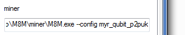

Multi-configuration howto
By default, M8M will load its configuration from init.json, expecting to found it in the same directory it resides.
Maybe you want to try different algorithms... or maybe you just want to see the difference between p2p and centralized pool so you want multiple configs.
There are two ways to do this: using a command line parameter or by redirecting loading.
Using a command-line parameter
The best way to handle multiple configurations is to create new shortcuts to M8M using the --config parameter.
- right click and hold on M8M.exe, move your mouse a little, release the button, a menu will pop up;
- click "create shortcut";
- right click on the new file. Click on "properties", it's usually at the bottom;
- click "create shortcut";
- in the upper part of the window, click the "Shortcut" tab;
- the topmost editable field will be "Destination", it will end with ...M8M.exe;
- add a space;
- add --config;
- add a space;
- add the name of the file you want to use.
At this point the thing will look like

Redirecting file loading
If you don't use --config then you can switch configuration by adding the userConfiguration switch in the configuration file. Your init.json might look like:
{
"userConfiguration": "loadAnotherFile.json",
"pools": [ ... ],
"driver": "OCL",
"algo": "qubit",
"impl": "fiveSteps",
"implParams": { ... }
}
You can redirect only once and only if you don't use --config which implies that only init.json can use userConfiguration.